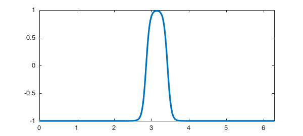
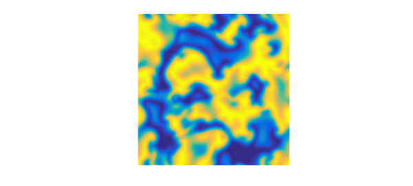
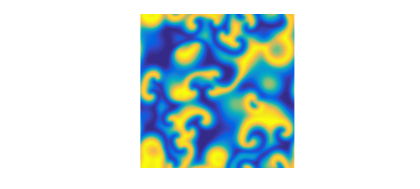
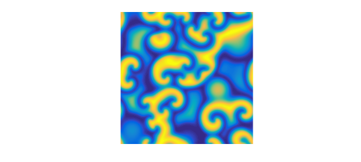
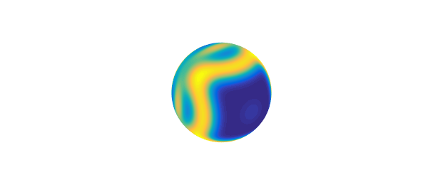
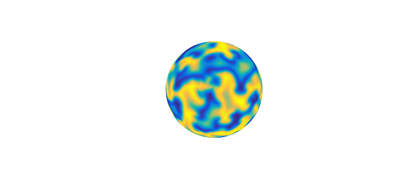

19.1 Introduction
By a stiff PDE, we mean a partial differential equation of the form
$$ u_t = S(u) = Lu + N(u), \quad\quad (1) $$
where $L$ is a constant-coefficient linear differential operator on a domain in 1D/2D/3D or on the sphere, and $N$ is a constant-coefficient nonlinear differential (or non-differential) operator of lower order on the same domain. In applications, PDEs of this kind typically arise when two or more different physical processes are combined, and many PDEs of interest in science and engineering take this form. For example, the viscous Burgers equation couples second-order linear diffusion with first-order convection, and the Allen--Cahn equation couples second-order linear diffusion with a nondifferentiated cubic reaction term. Often a system of equations rather than a single scalar equation is involved, for example in the Gray--Scott and Schnakenberg equations, which involve two components coupled together. (The importance of coupling of nonequal diffusion constants in science was made famous by Alan Turing in the most highly-cited of all his papers [14].) An example of a third-order PDE is the Korteweg--de Vries equation (KdV) equation, the starting point of the study of nonlinear waves and solitons. Fourth-order terms also arise, for example in the Cahn--Hilliard equation, whose solutions describe structures of alloys, and the Kuramoto--Sivashinksy equation, related to combustion problems among others, whose solutions are chaotic.
Solving all these PDEs by generic numerical methods can be highly challenging. This chapter decribes Chebfun's capabilities based on more specialized methods that take advantage of special structure of the problem. One special feature is that the higher-order terms of the equation are linear, and another is that in many applications boundary effects are not the scientific issue, so that it suffices to consider periodic 1D/2D/3D domains. (On the sphere, periodicity naturally arises; see Chapter 17).
Specifically, the Chebfun codes spin/spin2/spin3/spinsphere we shall describe---which stand for "stiff PDE integrator"---are based on exponential integrators (in 1D/2D/3D) and implicit-explicit schemes (on the sphere). The codes spin/spin2/spin3 are very general codes that can employ an arbitrary exponential integrator; by default, they use the fourth-order stiff time-stepping scheme known as ETDRK4, devised by Cox and Matthews [5]. The spinsphere code uses the standard IMEX-BDF4 scheme for diffusive PDEs and the LIRK4 scheme [3] for dispersive PDEs. These codes handle entirely general problems of the form (1), but convenient defaults are in place, an in particular, one can quickly solve well-known problems by specifying (case-insensitive) flags such as burg, kdv, gl and ks.
As we shall describe, spin/spin2/spin3/spinsphere take as inputs an initial function in the form of a chebfun, chebfun2, chebfun3 or spherefun (with appropriate generalizations for systems using chebmatrix objects), compute over a specified time interval, and output another chebfun, chebfun2, chebfun3 or spherefun corresponding to the final time (and also intermediate times if requested). By default they show movies of the computation as it goes.
19.2 Computations in 1D with spin
The simplest way to see spin in action is to type simply spin('ks') or spin('kdv') or another similar string to invoke an example computation involving a preloaded initial condition and time interval. (Other choices include ac, burg, bz, ch, gs, ks, niko, and nls.) In interactive computing, this is all you need: spin will plot the initial condition and then pause, waiting for user input to start the time-integration, and then plot a movie of the solution. Here in a chapter of the guide, we use a spinop obect with a grid size N and a time-step dt, and plot off. (See section 19.5 to learn how to manage preferences.) Here we solve the KdV equation $u_t = -uu_x - u_{xxx}$:
S = spinop('kdv');
u = spin(S, 256, 1e-6, 'plot', 'off');
The output u is a chebfun at the final time:
plot(u)
spin makes these things happen with the aid of a class called a spinop (later we will also see spinop2, spinop3 and spinopsphere). For example, to see the KdV operator we have just worked with, we can type
S = spinop('kdv')
S =
spinop with properties:
domain: [-3.141592653589793 3.141592653589793]
init: [Infx1 chebfun]
lin: @(u)-diff(u,3)
nonlin: @(u)-.5*diff(u.^2)
tspan: [0 0.030150000000000]
numVars: 1
(To find what initial condition ws used, type help spin.) As a second example of a stiff PDE in 1D, here is the Allen--Cahn equation $u_t = 0.005u_{xx} + u - u^3$:
S = spinop('ac');
u = spin(S, 256, 1e-1, 'plot', 'off');
figure, plot(u)
The computation we just performed was on the time interval $[0,500]$. If we had wanted the interval $[0,100]$, we could have specified it like this:
S.tspan = [0 100]; u = spin(S, 256, 1e-1, 'plot', 'off'); figure, plot(u)
To specify a different initial condition, you can provide a chebfun as another argument. For example, here we use a simpler initial condition:
S.init = chebfun(@(x) -1 + 4*exp(-19*(x-pi).^2), [0 2*pi], 'trig'); u = spin(S, 256, 1e-1, 'plot', 'off'); figure, plot(u)

Suppose we want Chebfun output at times $0,1,\dots, 30$. We could do this:
S.tspan = 0:1:30; U = spin(S, 256, 1e-1, 'plot', 'off');
The output U from this command is a chebmatrix. Here for example is the initial condition and its plot:
U{1}, plot(U{1}), axis([0 2*pi -1 3])
ans =
chebfun column (1 smooth piece)
interval length endpoint values trig
[ 0, 6.3] 256 -1 -1
vertical scale = 3
Here is a waterfall plot of all the curves:
waterfall(U), xlabel x, ylabel t
To see the complete list of preloaded 1D examples, type help spin.
Of course, spin is not restricted to preloaded differential operators. Suppose we wanted to run a problem on the domain $d = [0,5]$, from $t=0$ to $t=10$, with initial condition u0(x) = cos(x) and involving the linear operator $L:u\mapsto .3u''$ and the nonlinear operator $N:u\mapsto u^2-1$. We could do it like this:
dom = [0 5]; tspan = [0 10]; S = spinop(dom, tspan); S.lin = @(u) .3*diff(u,2); S.nonlin = @(u) u.^2 - 1; S.init = chebfun(@(x) cos(x), dom);
19.3 Computations in 2D and 3D with spin2 and spin3
spin/spin2/spin3 have been written at the same time as Chebfun3 has been being developed, so naturally enough, our aim has been to make them operate in as nearly similar fashions as possible in 1D, 2D, or 3D. There are classes spinop2 and spinop3 parallel to spinop, invoked by drivers spin2 and spin3. Preloaded examples exist with names like gl2 and gl3 (Ginzburg--Landau) and gs2 and gs3 (Gray--Scott). Too see the complete lists of preloaded 2D and 3D examples, type help spin2 and help spin3.
For example, here is the Ginzburg--Landau equation:
$$ u_t = \Delta u + u - (1+1.5i)u\vert u\vert^2. \quad\quad (2)$$
The built-in demo in 2D solves the PDE on $[0,100]^2$ and produces a movie to time $t=100$. Here are the solutions at times $0,10,20,30$:
S = spinop2('gl2');
S.tspan = 0:10:30;
U = spin2(S, 100, 2e-1, 'plot', 'off');
for k = 1:4
plot(real(U{k})), view(0,90), axis equal, axis off
snapnow
end


In 3D, the demo spin3('gl3') solves the PDE on $[0,100]^3$ and produces a movie to time $t=70$.
19.4 Computations on the sphere with spinsphere
As we mentioned in the introduction, it is also possible to solve PDEs of the form (1) on the unit sphere with the spinsphere code [13], which is based on the spherefun technology (see Chapter 17) and implicit-explicit time-stepping schemes.
For example, to solve the preloaded example spinsphere('ac') solves the Allen--Cahn equation
$$ u_t = 10^{-2}\Delta u + u - u^3, \quad\quad (2)$$
on the sphere up to $t=60$. The intial condition looks like this
S = spinopsphere('ac');
figure, plot(S.init), axis off
% Here are the solutions at times $2,5,10$:
S.tspan = [0 2 5 10];
U = spinsphere(S, 256, 1e-1, 'plot', 'off');
for k = 2:4
plot(U{k}), axis off
snapnow
end


Another examples is the Ginzburg--Landau (2) but with a much smaller diffusion $5\times 10^{-4}\Delta u$. The preoladed example solves the PDE tp $t=100$ using a random initial condition (a randnfunsphere). Here are the solutions at times $0,10,20,30$:
S = spinopsphere('gl');
S.tspan = 0:10:30;
U = spinsphere(S, 256, 1e-1, 'plot', 'off');
for k = 1:4
plot(U{k}), axis off
snapnow
end

19.5 Managing preferences
The spin/spin2/spin3/spinsphere codes use the classes spinpref, spinpref2, spinpref3 and spinprefsphere to manage preferences, including the choice of the exponential integrator/implicit-explicit schemes for the time-stepping schemes, the value of the time-step, the number of grid points and various other options. See the help texts of these files for the complete lists of preferences.
For example, to solve the Kuramoto--Sivashinsky equation using the EXPRK5S8 scheme of Luan and Ostermann [9], one can type:
pref = spinpref('scheme', 'exprk5s8', 'plot', 'off');
S = spinop('ks');
u = spin(S, 256, 5e-2, pref);
Alternatively, one can type:
u = spin(S, 256, 5e-2, 'scheme', 'exprk5s8', 'plot', 'off');
Preferences in 2D and 3D use spinpref2 and spinpref3, e.g.,
pref = spinpref2('plot', 'off');
S = spinop2('gl2');
u = spin2(S, 100, 2e-1, pref);
or simply
u = spin2(S, 100, 2e-1, 'plot', 'off');
On the sphere, preferences are managed with spinprefsphere.
19.6 A quick note on history
The history of exponential integrators for ODEs goes back at least to Hersch [6] and Certaine [5]. The extensive use of these formulas for solving stiff PDEs seems to have been initiated by the papers by Cox and Matthews [5], which also introduced the ETDRK4 scheme that is the default used by spin, and Kassam and Trefethen [9]. A striking unpublished paper by Kassam [7] shows how effective such methods can be also for PDEs in 2D and 3D. A software package for such computations called EXPINT was produced by Berland, Skaflestad and Wright in 2007 [1]. A comprehensive theoretical understanding of these schemes has been presented by Hochbruck and Ostermann in a number of papers, including [7]. The practical business of comparing many different schemes has been carried out by Minchev and Wright [11], then Bootland [2] and Montanelli and Bootland [12]. Both of these latter projects were motivated by the challenge of choosing a good all-purpose integrator for use in Chebfun, and the expectation was that a 5th- or 6th-order or even 7th-order integrator would be best; but in the end we have been unable to find a method that outperforms ETDRK4 by a significant enough factor to be worth the added complexity. The spin package was written by Montanelli.
References
[1] H. Berland and B. Skaflestad and W. M. Wright, EXPINT---A MATLAB package for exponential integrators, ACM Transactions on Mathematical Software, 33 (2007), pp. 4:1--4:17.
[2] N. J. Bootland, Exponential integrators for stiff PDEs, MSc thesis, University of Oxford, 2014.
[3] M. P. Calvo, J. de Frutos and J. Novo, Linearly implicit Runge--Kutta methods for advection-reaction-diffusion equations, Appl. Numer. Math., 37 (2001), pp. 535-549.
[4] J. Certaine, The solution of ordinary differential equations with large time constants, in Mathematical methods for digital computers, Wiley, New York, 1960, pp. 128--132.
[5] S. M. Cox and P. C. Matthews, Exponential time differencing for stiff systems, J. Comput. Phys. 176 (2002), pp. 430--455.
[6] J. Hersch, Contribution a la methode des equations aux differences, Z. Angew. Math. und Phys., 9 (1958), pp. 129--180.
[7] M. Hochbruck and A. Ostermann, Exponential integrators, Acta Numerica, 19 (2010), pp. 209--286.
[8] A.-K. Kassam, Solving reaction-diffusion equations 10 times faster, Tech. Rep. 1192, Numerical Analysis Group, University of Oxford, 2003.
[9] A.-K. Kassam and L. N. Trefethen, Fourth-order time-stepping for stiff PDEs, SIAM J. Sci. Comp., 26 (2005), pp. 1214--1233.
[10] V. T. Luan and A. Ostermann, Explicit exponential Runge--Kutta methods of high order for parabolic problems, J. Comput. Appl. Math., 256 (2014), pp. 168-179.
[11] B.V. Minchev and W. M. Wright, A review of exponential integrators for first order semi-linear problems, Tech. Rep. 2/2005, Norwegian University of Science and Technology, 2005.
[12] H. Montanelli and N. J. Bootland, Solving periodic semilinear stiff PDEs in 1D, 2D and 3D with exponential integrators, submitted, 2016.
[13] H. Montanelli and Y. Nakatsukasa, Fourth-order time-stepping for PDEs on the sphere, submitted, 2017.
[14] A. M. Turing, The chemical basis of morphogenesis, Phil. Trans. Roy. Soc. Lond. B, 237 (1952), pp. 37--72.